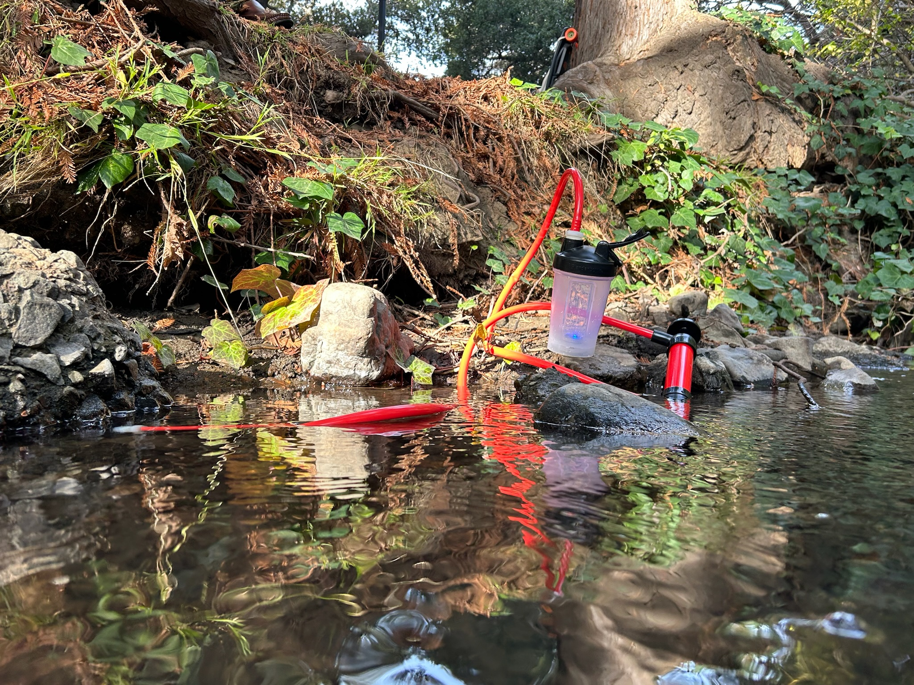
A portable and less physically demanding water filtration solution for outdoor enthusiasts. We targeted our product and research towards individuals and groups who loved nature camping and hiking, by focusing on solving the shortcomings of current market products by narrowing down and analysing the problem opportunity gap.
Embarking on the AquaLux project, my team and I were motivated by a single vision: to innovate water filtration for outdoor enthusiasts. Our journey began with meticulous user research, gathering data through surveys and direct observations to understand the real-world needs and limitations of current water filtration systems. This phase was crucial, revealing a spectrum of user requirements and preferences which became the backbone of our design parameters.
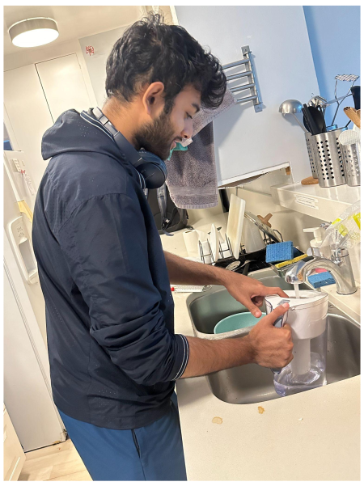 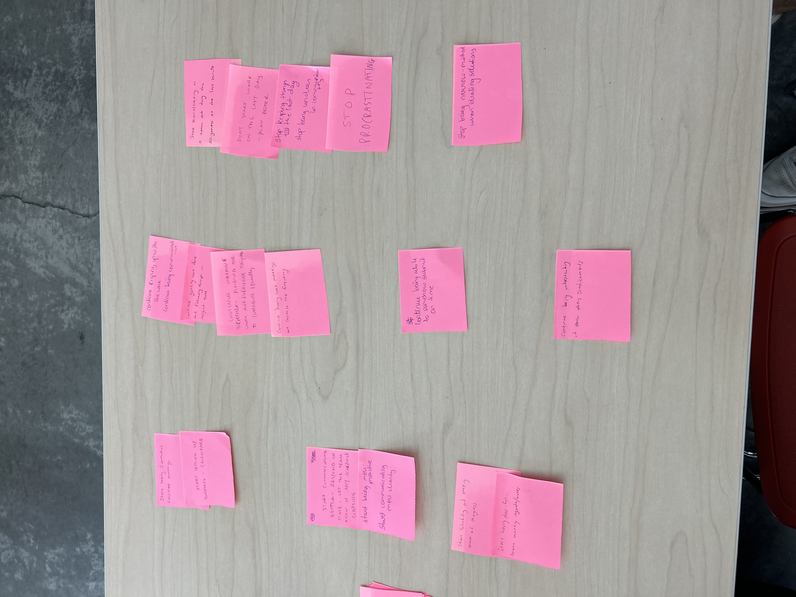
In developing AquaLux, my team and I aimed to redefine outdoor water filtration. My involvement began with conducting surveys and observations to pinpoint user needs, which informed the foundation of our design. I contributed to generating a myriad of concepts, later refined through collaborative brainstorming. I also lead the development of an exhaustive google survey which helped us choose our direction of development and focus in the early stages of the product ideation.
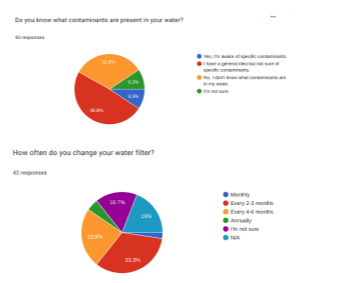 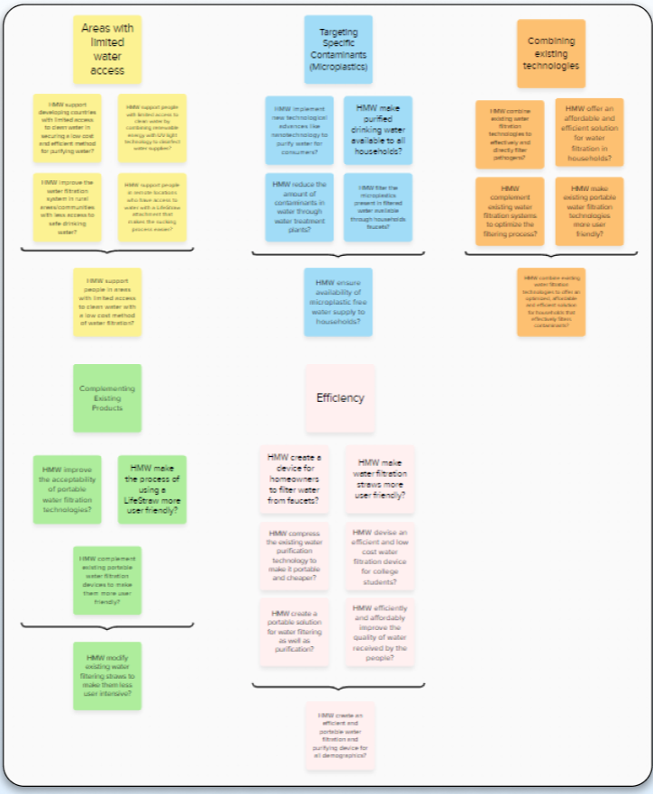
The next crucial step was identifying our main market competitors, and finding their shortcomings that could be addressed through our product evolution. This required intensive research and deep dive into their user reviews and recommendations. I then charted out the VOA charts for our competitors, which helped us gain better insights while making the VOA chart for our own product.
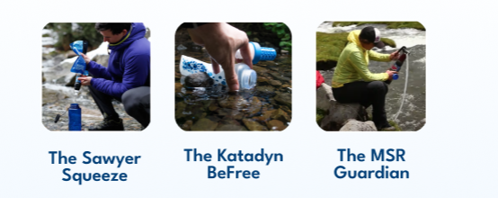 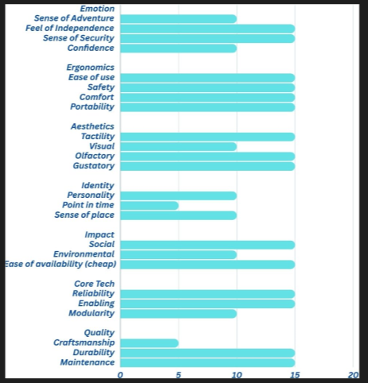
Next, we were each tasked with generating 10 concepts individually and then evolving and combining these ideas to come up with an almost final concept that we could then start developing through an exhaustive iteration of rapiud prototyping and user validation.
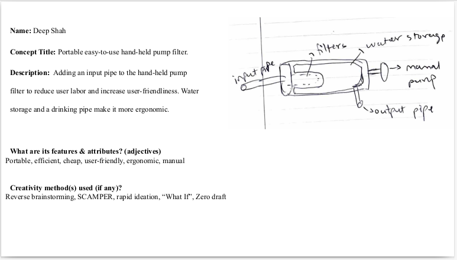
Through mind mapping, we prioritized key features, and using dot voting and a weighted matrix, we pinpointed the top concepts. Prototyping was hands-on; I contributed to creating models ranging from rudimentary to advanced, each iteration informed by direct feedback from outdoor enthusiasts. During this time my teammate and I conducted a virtual interview of an ex-CHAOS member, Claire, who helped us validate our initial concepts and helped us narrow down on a few key features to lookout for when selecting our final concept.
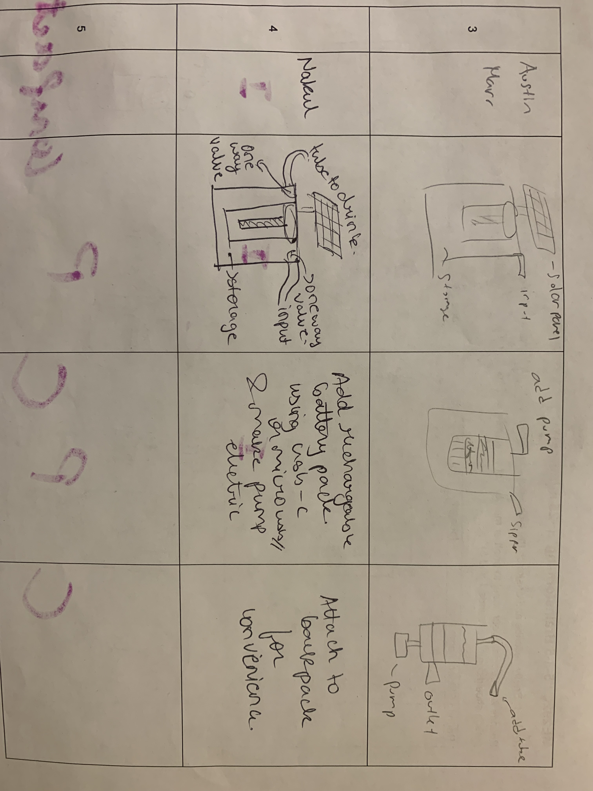 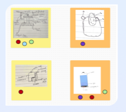
After we successfully selected our final prototype, we started prototyping rapidly, running through iterations of our top 5 concepts and noting the pros and cons of each idea, sometimes within the team and sometimes through external validation of other teams and the instructing team.
Electric Motor Straw Filter 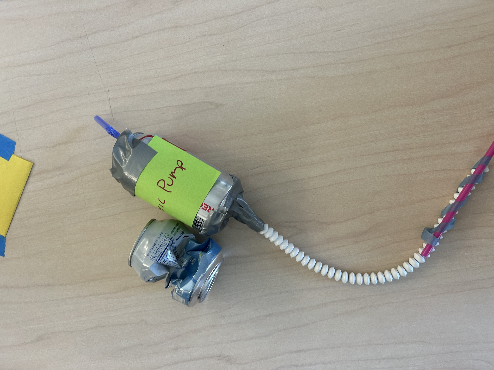
BackPack Filter Solution

Water Bottle UV Light Filter 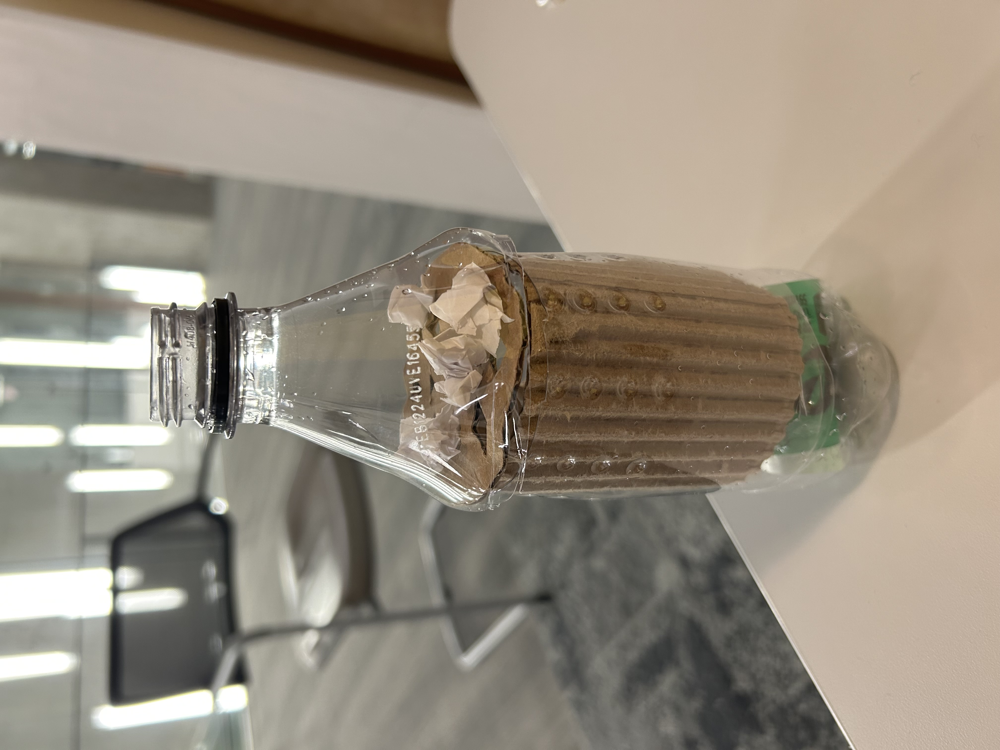
Pre-final Prototype 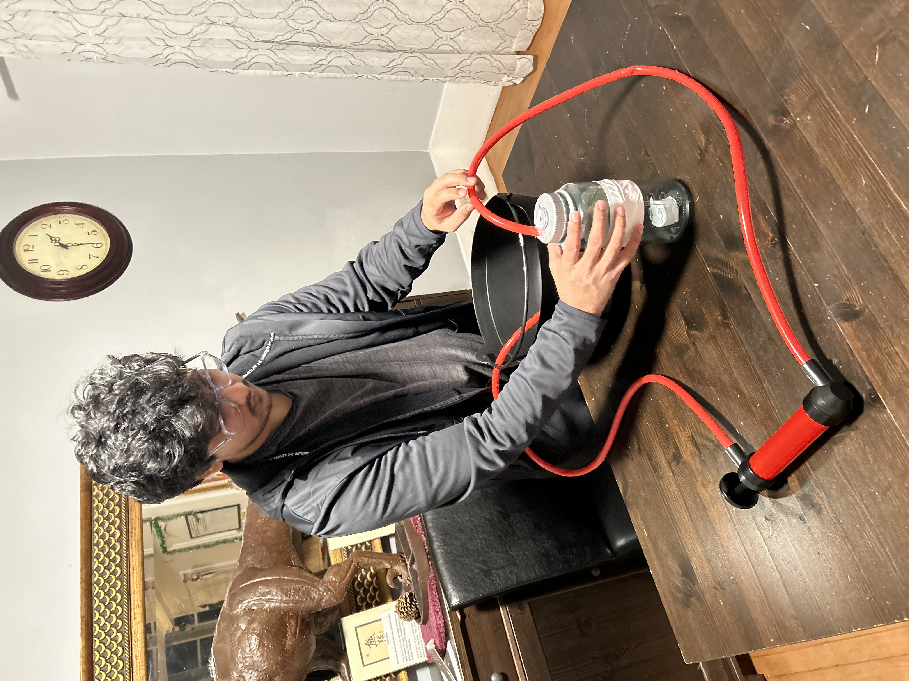
My teammate and I then presented all of these prototypes to our target audience - Hikers from CHAOS (Cal Hiking and Outdoor Society) - they helped us gain better insights into actual user preferences and helped us identify the shortcomings in our prototypes. Through this newfound knowledge and a better sense of direction, we were able to come up with a better, precise and foolproof solution to tackle protable and modular water filtration.
We combined the manual pump filter with the UV light filter inside the water bottle to act a line of defense against any mechanical/electrical failures in either of the filters. This ensured ~100% reliabilty and safety in terms of filtration capacity (filtering ~100% impurities from large sediments, to bacteria and viruses).
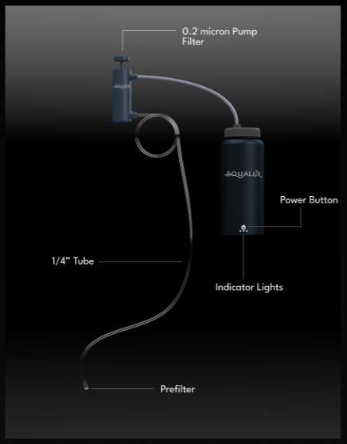 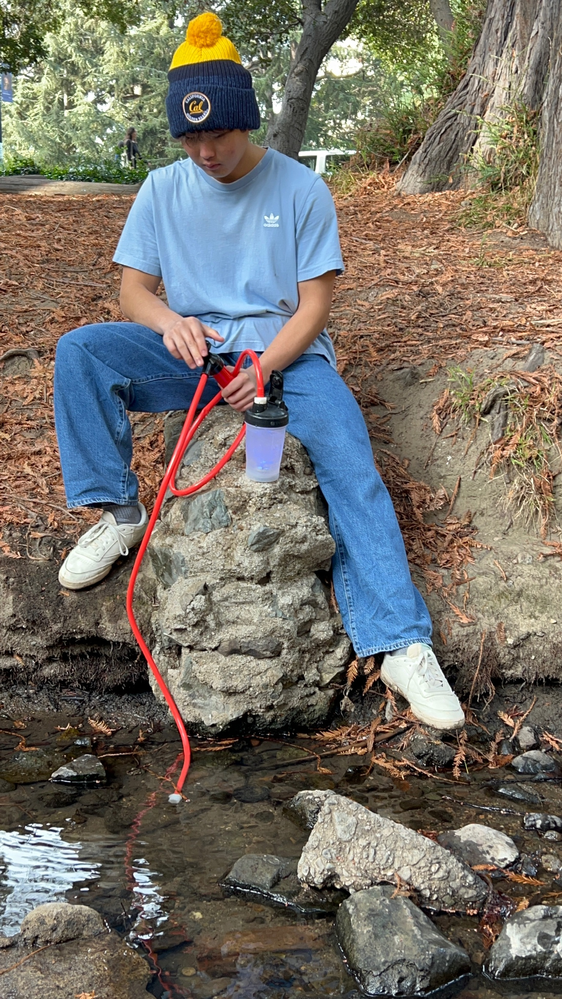 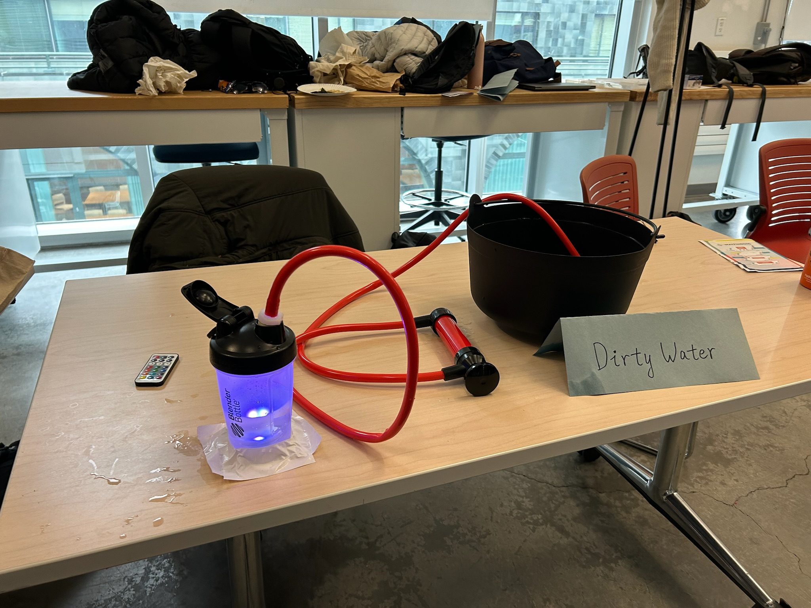
AquaLux materialized as a user-centric solution featuring UV purification and a modular pump, balancing durability with ease of use. I played a significant role in considering the technical aspects, ensuring each component met our stringent criteria for functionality and design simplicity.
 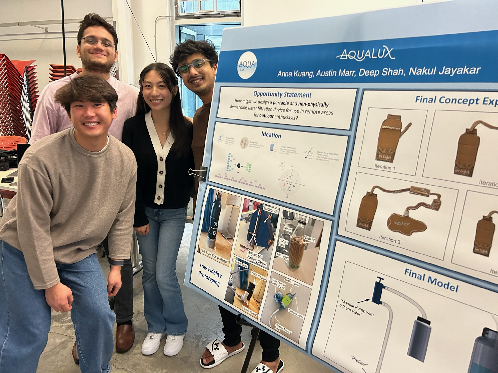
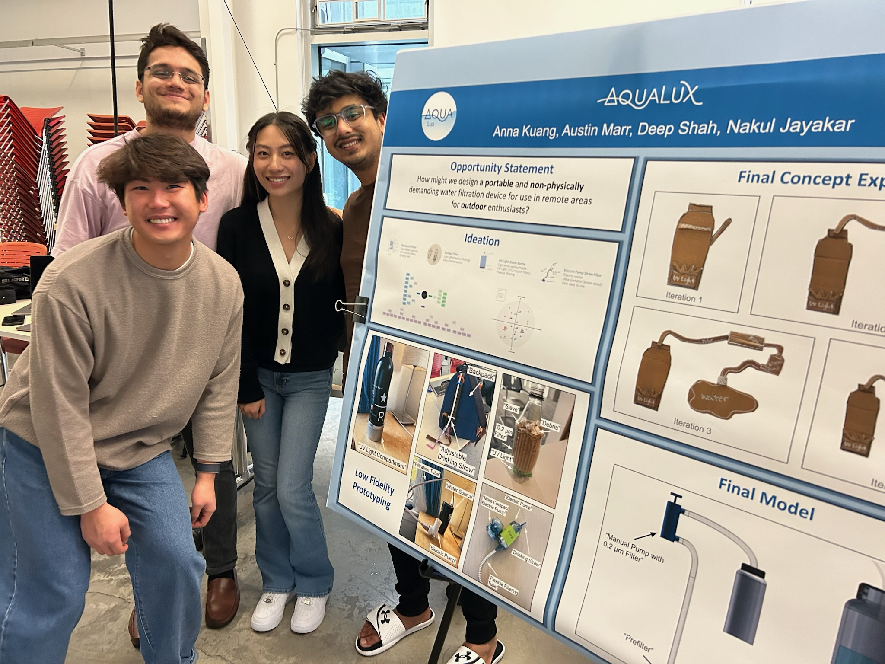